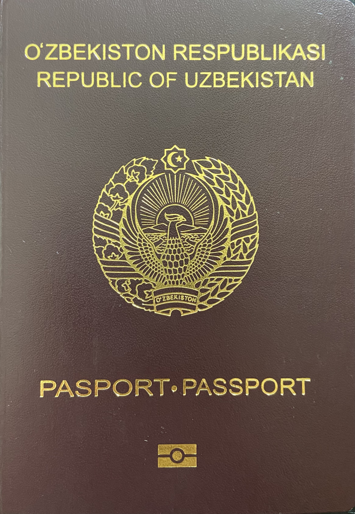

Uzbekistan citizenship and dual citizenship: the rules
Under the 2020 Law on Citizenship: Uzbekistan does not recognize dual citizenship; how citizenship is acquired; and what happens to someone who takes a foreign citizenship (it is not automatic). A practical, facts-based guide for the diaspora abroad.

For many Uzbekistanis living abroad — for example in the USA — the most common question is: if I take another country's citizenship, what happens to my Uzbek citizenship? This guide sets out, based on the current Law "On Citizenship of the Republic of Uzbekistan," how citizenship is acquired, the stance on dual citizenship, and the consequences of acquiring a foreign citizenship. (For exact article numbers, the official source is lex.uz.)
The current law
The Law "On Citizenship of the Republic of Uzbekistan" (ZRU-610) was adopted by the Legislative Chamber on 18 February 2020, approved by the Senate on 28 February, and signed by President Shavkat Mirziyoyev on 13 March 2020. It entered into force six months after official publication — in mid-September 2020 (15 September, per RFE/RL) — replacing the first citizenship law of 1992.
Dual citizenship is not recognized
Uzbekistan does not recognize dual citizenship. Under Article 12, Uzbekistan does not recognize a citizen's affiliation to a foreign citizenship: a person who also holds another state's citizenship may not, until a presidential decision on renunciation or loss, evade the duties arising from Uzbek citizenship. The constitutional basis is Article 22 of the Constitution, which establishes single citizenship for the whole territory. (No dual-citizenship treaty is currently confirmed to be in force for Uzbekistan.)
How citizenship is acquired
By birth (Article 14) — by descent (jus sanguinis): a child is a citizen if at birth both parents (or the sole parent) are Uzbek citizens. If one parent is an Uzbek citizen and the other is a foreign citizen, the child acquires citizenship only at the request of the Uzbek-citizen parent (or legal representative). A child born on Uzbek territory to unknown or stateless parents acquires citizenship (to prevent statelessness).
For naturalization (Article 19) the general conditions are: a registered renunciation of foreign citizenship; at least 5 years of continuous residence in Uzbekistan; a legitimate source of income; an undertaking to comply with the Constitution; and knowledge of the state language sufficient for communication. There is also a simplified procedure for compatriots (Article 20) and the possibility for the President to grant citizenship exceptionally in the national interest (Article 21). A former Uzbek citizen may restore citizenship (only once).
Loss of, and renunciation from, citizenship
Citizenship terminates in two ways (Article 23): renunciation or loss. Renunciation (Article 24) is carried out on the citizen's own application. Grounds for loss (Article 25) include: serving in a foreign state's military or government bodies; permanently residing abroad and, without valid reasons, failing to register on the consular register within 7 years; obtaining citizenship through forged documents; and voluntarily acquiring a foreign citizenship. Termination — whether by renunciation or loss — is finalized by a decision (decree) of the President.
If you take a foreign citizenship — it is not automatic
A key practical point: voluntarily acquiring a foreign citizenship (for example, US citizenship) is a legal ground for losing Uzbek citizenship (Article 25) — but it does not happen automatically. Under Article 30, the Interior/Foreign Affairs authorities forward a conclusion to the Citizenship Commission under the President, and termination takes effect only by a presidential decree. As the Migration and Citizenship Directorate has officially explained, if officials find that someone holds a foreign passport, that does not mean they are automatically stripped of citizenship — the person is warned and given the chance to renounce the foreign citizenship first. In other words, until a decree is issued, Uzbekistan still treats the person solely as its own citizen. Also, under Article 9, living abroad by itself does not terminate citizenship.
Granting citizenship to stateless persons (2020)
The 2020 law recognized as Uzbek citizens the stateless persons permanently resident in Uzbekistan who had arrived and been registered before 1 January 1995 (this provision took effect on 1 April 2020). UNHCR and other sources put the figure at about 50,000 people (more precisely, 49,228). More broadly, over 80,000 statelessness cases have been resolved since 2014.
A practical note for the diaspora
Article 10 of the law guarantees diplomatic and consular protection of Uzbek citizens abroad. The law also defines "compatriot" status (Article 3): a person born in or formerly resident in Uzbekistan, now living abroad, whose direct ascendants lived in Uzbekistan; they are offered a simplified route to citizenship (Article 20).
A note
This article is based on the text of the law and reputable sources; it is not legal advice. Exact article numbers should be checked against the official Uzbek/Russian text on lex.uz. Sources: the Law on Citizenship (ZRU-610), lex.uz, kun.uz (clarifications from the Interior Ministry's Migration and Citizenship Directorate and the Foreign Ministry), RFE/RL, UNHCR and JURIST.
Sources
- Law of the Republic of Uzbekistan "On Citizenship" (ZRU-610), 13 March 2020 — Arts. 9, 12, 14, 19, 20, 23, 24, 25, 30 (via lex.uz)
- Wikipedia — Uzbekistan nationality law (ZRU-610; adoption/signing dates; non-recognition of dual citizenship)
- RFE/RL — Uzbek law easing rules on citizenship comes into force (~15 Sept 2020; ~50,000 stateless)
- kun.uz — MFA/MIA clarification: acquiring a foreign passport does not automatically strip Uzbek citizenship (Art. 30)
- UNHCR — Uzbekistan to end statelessness for 50,000 people (2020 law)